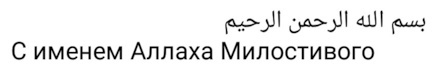
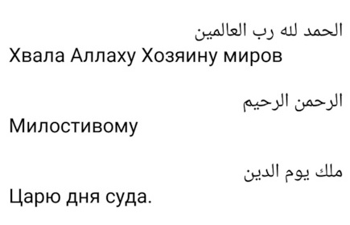
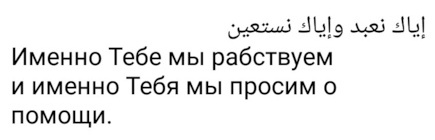
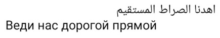
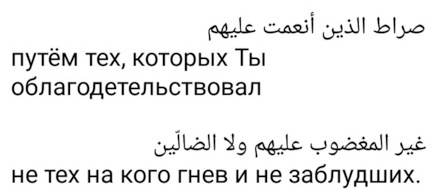

بسم الله الرحمن الرحيم
С именем Аллаха Милостивого Всемилостивого
Мустакым
mustaqeem.net
Ассалям алейкум, мои дорогие мусульмане и мусульманки. Мир вам и милость Аллаха и Его благодать. Да дарует вам Аллах Всевышний спокойствие, милость и да благословит вас.
Почему mustaqeem и что это
Слово Мустакым произносится с долгой гласной Ы. Поэтому, по-английски пишется Mustaqeem через двойную ee, для отображения долготы. Хотя пишется по-арабски буква обозначающая долгий гласный И, но из-за того, что перед ней находится твёрдая согласная ق - КЪ, она превращается при произношении в Ы.
Арабское слово مستقيم "Мустакым" переводится как "прямой".
Я стараюсь быть прямым, поэтому и выбрал доменное имя mustaqeem.net для своего сайта. Ранее на этом домене располагался, как я понял, пакистанский сайт с оригиналом и переводом Щедрого Чтения - ниспосланного Корана.
Хвала Аллаху, на Которого я надеюсь и уповаю. Да хранит вас Аллах от всего неприятного и плохого. Дай Аллах вам здоровье и крепкий иман.
Хвала Создателю и Хозяину всего!
Хвала Аллаху Господу творений! Хвала Аллаху Господу миров! Хвала Аллаху Господу вселенной! Хвала Аллаху Царю Дня Суда! Хвала Аллаху Милостивому Щедрейшему! Хвала Ему! Бог только Он, один Аллах.
Хвала Всевышнему, хвала! Он создал эти небеса. Он создал Землю и людей. Он создал жизнь и смерть, мученья и усладу. Он создал Райские сады и пламя Ада. Хвала Всевышнему, хвала! Он дал здоровье и болезнь, и исцеленье. Он кормит все Его творенья.
Хвала Аллаху Господу всего! Святи Его и величай Его. Хвала Аллаху Господу и Хозяину всех миров и всей вселенной!
Эта жизнь и вечность бесконечность
И все умрут, все бренны в этом мире. И все покорно вырастут и встанут из могил на Судный день, на честный час расплаты. В Аду не будет смерти, и в Раю. И бесконечные мученья постигнут тех, кто был неверен и обольщён, без убеждений, кто верил в ложь и кто высокомерил.
В Раю пророки и прощённые Аллахом. Они не будут ведать там печали. Не зря они намаз не пропускали.
Дуа - мольба
Единственный достойный поклоненья, прошу Тебя, прими мои моленья и лучшее даруй мне в День Воскресения.
Прошу у Аллаха Щедрейшего лучшей доли и в ахирате, и в Судный день, и в барзахе.
О Аллах, сделай моё сердце чистым и здоровым навсегда, и добавь мне побольше мудрости, полезных знаний, которые не забываются и здоровья на прямом пути.
Сура Аль-Фатиха "Открывающая"

Перевод

С именем Аллаха Милостивого Благого

Хвала Аллаху Господу миров, Милостивому Благому, Царю дня Суда.

Только Тебе мы поклоняемся, и только Тебя мы просим о помощи.

Веди нас по ровной широкой и прямой дороге.

По дороге тех, кого Ты одарил благами, а не тех на кого Ты гневаешься, и не (по дороге) заблудившихся.
Слово Сырат
Слово Сырат в арабском языке обозначает ровную широкую дорогу.
Ас-Сырат Аль-Мустакым - это ровная широкая и прямая дорога.
Красивое чтение Корана
Рекомендую: Чтение Варш от имама Нафи', сура 6, текст и аудио, первые 9 страниц.
Исламские сайты на русском языке
См. внешние ссылки.
والحمد لله رب العالمين